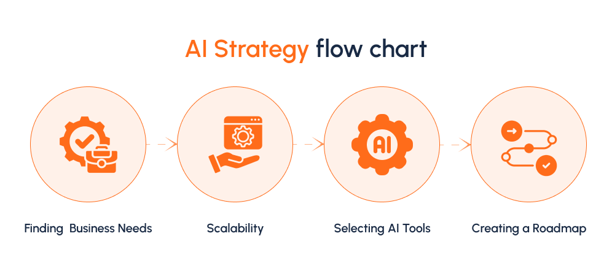
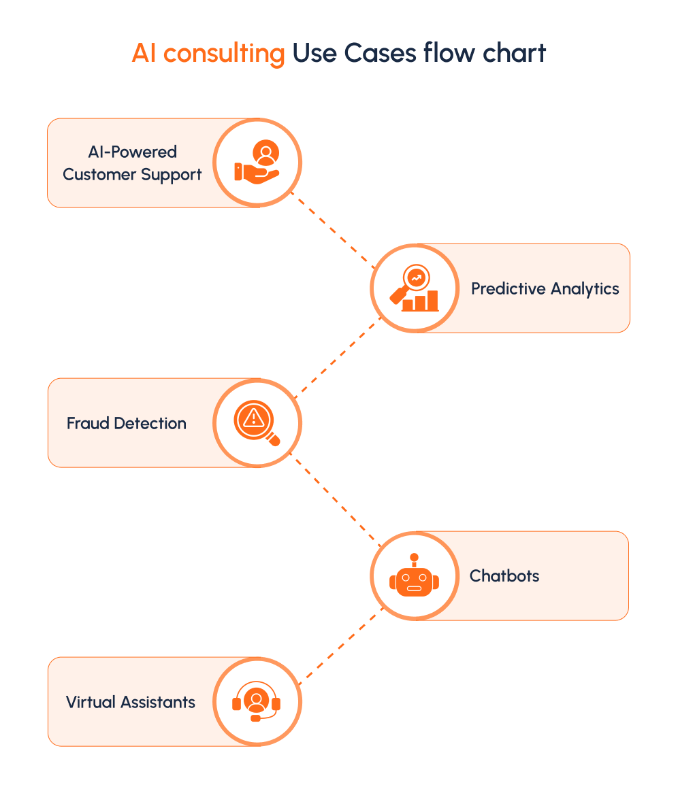
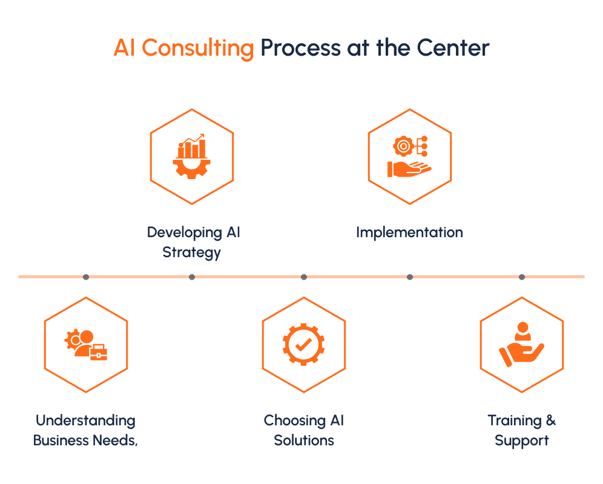

In a world where technological advancements keep evolving, AI can change the operating style of small businesses. In order to thrive in the competition and growing business demands, small businesses can opt for AI consultation to cut down the time-consuming manual process through smart automation.
With AI, small businesses can also streamline the workflow, make data-driven decisions, and enhance overall efficiency. Whether you are starting your small business or scaling up, AI consulting helps you stay ahead of the competition by optimizing the resources, cutting down costs, and unlocking smarter growth.
Why Should Small Businesses Look for AI Consulting?
Small businesses traditionally choose in-house AI experts to automate and get the work done. The drawback of this approach includes increased resources, time, and cost. This can be better handled in a short span and within the business's budget with the support of AI consultants as they help choose the right AI technologies.
A strong tie-up with the AI consulting company will transform the growth of small businesses as they help them leverage Artificial Intelligence. With AI consulting, the need to hire full-time AI experts gets eliminated while the AI consultants recommend the most efficient and scalable AI solutions.
With AI-powered analytics, small businesses can identify the trends, demands, risks, user preferences, and business opportunities to make better decisions. Additionally, AI consulting helps automate repetitive tasks and thus employers and employees can focus on strategic growth.
The core advantages of implementing AI with small businesses include providing personalized user experience, smarter operations, scalability, fraud detection, optimized marketing campaigns, and better supply chain management.
Thus, AI consulting empowers small businesses to unlock growth from predictive analytics to smart chatbots.
What is AI Consulting for Small Businesses?
AI Consulting is the process in which AI consultants offer expert guidance on finding the right artificial intelligence technologies and tools to integrate into business and optimize performance for better growth. With AI consulting, businesses can work faster, more efficiently, and at reduced expenses to stay ahead of the competition.
Consultants in AI consulting companies work closely with businesses to suggest the following:
1. Analyze the existing business model and find the areas where AI can integrate.
2. Find the operational problems and suggest AI automation, chatbot support, etc., for a streamlined workflow.
3. Come up with a customized AI strategy plan to attain the business goals and scalable growth.
4. Utilizes AI tools and software solutions to enhance the user experience, analyze data to bring in improvements, and more.
5. Provide hands-on training to the employees to ensure long-term success with AI.
How AI Consulting is Transforming Businesses Operations
AI Consulting in recent times has been a breakthrough innovation, especially for small businesses. By opting for AI consulting, businesses can do more with less. i.e., it supports automating tasks, obtains a data-driven approach, and efficiently handles operations without much resources.
Listed down are the efficiency and growth impacts AI will create for businesses:
1. It boosts customer service with the integration of AI Chatbots for automated responses, 24/7 chat and inquiry support, and enhanced user experience without extra staffing.
2. With AI-driven insights, it provides smarter marketing strategies for personalized campaigns, analyzes user behaviors, and improves outreach.
3. Uses predictive analysis to find trends, customer types, and target audiences to reach business goals efficiently.
4. AI-powered analytics will optimize the supply chain, track demand, and improve logistics to drive consistent growth.
Crafting a Winning AI Strategy for Small Businesses
A well-structured plan is essential to make small businesses integrate with AI efficiently. Without a structured approach, the use of AI implementation results in wasted resources and inefficiencies. However, with a well-designed plan, businesses can choose the right AI tools that help in scaling up and attaining the goals in terms of revenue.
Take a brief look at the winning AI strategies provided by AI consultancies for small businesses.

Finding Business Needs - The foremost thing is to find where AI integration is required in the business. So, AI Consulting will look at the current working structure to find inefficiencies and suggest areas where AI integration will greatly work. This opens up businesses to find and save time in resource allocation, improve customer engagement, and reduce costs.
Selecting AI Tools - There are lots of AI tools and not everything works for every other business. Hence AI consultants will find whether predictive analytics automation software or machine learning platforms fit your small business needs. With the right integration of AI tools, business operations will be smooth and efficient. For better functioning, businesses should start implementing AI technologies in such a way that first solves the immediate issues.
Creating a Roadmap - To integrate AI with the existing or new business, it is vital to create a proper plan. So, AI Consultants will work on bringing a step-by-step plan that begins from AI integration to testing and optimization. They also use AI software to find out customer data and
Scalability Option - With expected business growth, AI consultants will help integrate scalable AI solutions for the business. The AI systems designed by the consultants will be flexible and adaptable to the changing environment of the business. This is taken care of at the very beginning by the consultants to restrict small businesses from spending more than the allocated budget at any time in the future.
Further, AI consultants will stay up-to-date with AI trends and help small businesses capitalize and adapt to market shifts.
How Entrepreneurs can Utilize AI Consulting Services
AI consulting is much needed for entrepreneurs as they face challenges like limited resources, changing customer demands, and complications with scalability. All these drawbacks can be overcome by AI-driven solutions. Thus, AI consulting helps streamline operations, automate repetitive tasks, and provide tailored experience.
Here is how entrepreneurs can utilize AI consulting to work smarter, scale up, and thrive in the competitive marketplace.
Certain admin tasks like email response, scheduling, and invoicing can be automated using AI-powered automation tools. With this, entrepreneurs can focus on business growth and plan strategically for the Ai development of the firm. With AI solutions, operational costs get lowered as it eliminates manual tasks.
AI uses predictive analysis to find customer preferences, and patterns, and predict their requirements. With AI-powered recommendations, startups and growing businesses entrepreneurs can offer personalized experiences that boost user engagement, business visibility, and trust. AI-powered insights help entrepreneurs opt for data-driven decisions. Additionally, Entrepreneurs can offer customized recommendations and support with the help of AI-driven chatbots.
With AI-driven insights and recommendations, entrepreneurs can opt out of guesswork. AI insights provide a clear view of customer preferences, and market trends, choose better marketing campaigns, and reach the right audience.
With optimized workflow and automation the repetitive tasks, and manual workload are reduced leading to reduced operational costs. AI consultants ensure to optimize the workflow efficiently for startups, small businesses, and entrepreneurs. Thus, it cuts down unnecessary expenses, and thus businesses can scale up efficiently.
Real-Time Use Cases of AI Consulting for Startups
There are various sections in which AI is used in Startups to streamline business operations. This includes but is not limited to the following:

1. Most startups started using AI chatbots and virtual assistants to engage users 24/7. With this, handling customer queries and guiding with purchases is made faster which in turn reduces response time and thus improves customer satisfaction.
2. AI consulting helps efficiently find out what exactly customers are looking for with the help of AI's Predictive Analytics. With the data-driven approach, startups focus on increasing sales by targeting the right customers.
3. With the help of AI consulting, startups can implement fraud detection tools to identify unusual patterns in online transactions and potential fraud. This way, businesses stay away from fraudulence and enhance the security of the customers.
Future of AI Consulting - What Lies Ahead?
AI is being used in businesses to make everyday tasks efficient. AI is evolving and so is AI consulting. Thus we could expect AI consulting to help small businesses with more advanced, cost-efficient, and scalable solutions in the near future.
Get to know what's on the horizon:
The traditional repetitive tasks like data handling, invoicing, customer inquiries, etc., will be handled by AI. With this smart automation, manual errors get eliminated and businesses can operate efficiently by focusing on innovation and scalability.
AI consulting helps businesses analyze customer behaviors in real time to provide highly customized interactions. AI engages the customers at a deeper level by delivering tailored product recommendations and using smart chatbots to find the customer's needs.
AI analytics will refine business decisions by analyzing a larger dataset by uncovering the patterns, predicting market trends in advance, and optimizing competitive pricing. With AI-driven advanced data insights, small businesses can make smarter and more confident decisions.
AI will soon start to work alongside emerging technologies like IoT and cloud computing as a connected ecosystem. Businesses can automate processes, security, and scalability to make operational flow more efficient.
When AI becomes more affordable and adaptable, small businesses can integrate AI into their operations to stay ahead of the curve thereby unlocking new growth and opportunities.
Benefits of AI Consulting Services for Business Transformation
AI consulting is transforming the way businesses and entrepreneurs are working. The benefits of relying on AI consulting services for businesses are as follows.
1. The foremost advantage of choosing AI consulting services is it is a cost-efficient means to implement AI in any business. With this, business operations are streamlined thus reducing labor costs and operational expenses.
2. AI consultants will quickly identify the business areas that require AI tool integration. This increases productivity while saving time, effort, and cost.
3. Not every business works alike and thus AI consulting services will provide customized AI strategies that fit your goals and challenges.
4. With data-driven insights, businesses can make the most accurate and informed decisions for long-term growth.
5. AI consulting will ensure the AI solutions stay scalable and thus grow with your business. Thus, adapting to new trends will be easier and smoother.
6. Businesses will stay ahead of the competition and drive innovation with the implementation of AI strategies.
What are the Challenges Associated with AI Consulting
AI Consulting helps transform business goals. However, it does come with lots of challenges, and are as follows.
1. Hiring AI consultants with the help of AI consulting may be costly for small businesses.
2. Consultants will take time to find if or not the business operation requires AI integration.
3. Many times, integrating AI into the existing workflow of a business is complex. It requires an expert consultant to make careful planning for a seamless transition.
4. AI consultants offer strategic planning and businesses need to use the right AI tools. Hence, providing upskilling training and ongoing support for the teams becomes crucial for AI Consulting services.
Step-by-Step Guide to the AI Consulting Process for Business Growth
AI consulting involves getting the right solutions for the businesses that align with the goals. It involves the following steps.

The first thing any AI consultants do is to analyze the business and find the places where AI can be integrated for betterment. During this process, AI consultants will have a discussion with the business teams to find the workflow, data availability, and current technologies used to find how AI can be implemented to improve the customer experience.
After finding the business requirements, AI consultants will start creating a roadmap for the AI integration. This starts with a proper plan, defining goals, selecting AI models, and a step-by-step process to implement. A well-structured plan makes AI integration align with the business goals and attain long-term success.
Every business is different and thus using the right AI tools is vital. To handle this scenario, AI Consultants will help you choose the AI software, platform, and frameworks that match your business sector, operational needs, and budget. The end goal of this step is to find AI solutions that are effective, scalable, and cost-effective.
After finalizing the AI tools and software, it is vital to test and implement. Now, AI consultants will integrate the AI solutions into your existing workflow. This involves testing if or not it works, refining the solution if needed, and optimizing it for the betterment of the business. This ensures businesses get the most accurate insights and thereby finetune the solutions to maximize the business reach and visibility.
AI becomes useful when it is being used. AI consultants will provide training sessions for the employees to understand how to use the AI systems. Consultants will offer continuous support and monitoring to find how businesses have adapted to the AI-driven changes and thereby help maximize the return on investment.
How to Choose the Right AI Consultants - Things to Look For
If you are someone who wants to know how to choose the right AI consultants after getting to know the benefits of AI Consulting, then here are the things you should consider.
1. Ensure to find the experience and expertise level of the AI consultants beforehand. You can even look for the portfolio or track record of the AI projects completed successfully. An AI consultant with a strong background will surely transform your business goals.
2. It is vital to choose AI consultants who can tailor solutions according to your business needs. Ensure to select a consultant who has industry knowledge as using industry-specific AI use cases makes a huge impact.
3. AI consultants should have technical proficiency. With a strong expertise in AI frameworks, data analytics, automation tools, etc, integrating AI into your businesses becomes effortless.
4. AI solutions should be expandable at any point in time and a good consultant will develop AI strategies to integrate AI into your business that is highly scalable.
5. Ensure to choose AI consultants who provide ongoing support and maintenance. It's because AI implementation is not just about deployment. A good consultant should be able to provide regular guidance, support, and training. Your business grows and stays effective with regular updates, troubleshooting issues, and performance optimization of the AI solution.
Final Thoughts on AI Consulting for Small Businesses
With AI being continuously improved and innovative, small businesses get to utilize AI consulting to improve their operations. This opens up the scope for small businesses to scale up and reach goals efficiently. The integration of AI solutions will help small businesses to make smarter decisions and enhance customer experiences.
Choosing the right AI consultancy will help small businesses by providing tailored recommendations for maximizing long-term success. They also continuously monitor how AI implementation works and offer after-support including maintenance. Whether you are a startup or scaling up your small business, investing in AI consulting will lay a solid foundation for your business growth.
Technical Architect
At Sparkout Tech Solutions, we believe in the power of collaboration. I take pride in fostering a team culture that encourages open communication, knowledge sharing, and continuous learning. In the ever-evolving tech landscape, I am committed to staying at the forefront of industry trends. This commitment allows us to deliver solutions that not only meet but exceed our clients' expectations